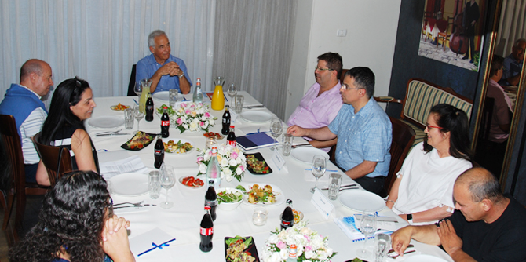
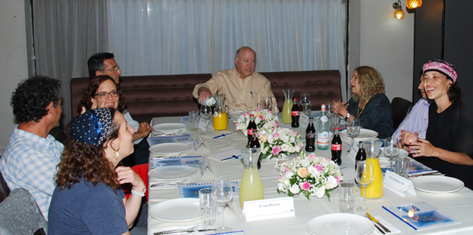

במסגרת ועדת ההיגוי שהתקיימה בחודש יוני קיימה יחידת בוגרי מנדל שני מפגשים מקבילים של בוגרים עם מנהלי קרן מנדל. המפגש אתגרי מערכת ההשכלה הגבוהה עסק באתגריה של מערכת המכשירה כוח אדם משכיל ומקצועי לשוק העבודה, וכמי שמידת היצירתיות, החדשנות והמצוינות שלה הם מנופים מרכזיים לחדשנות ולמצוינות המדעית, התרבותית והפרופסיונלית בחברה וכן להכשרת מנהיגי העתיד בכל תחומי החיים. הנושאים שנדונו במפגש היו תפיסת ההשכלה הגבוהה כ"תעשייה של תארים", ההשכלה ככלי להתפתחות מקצועית, השוני בין ייעודה של מכללה לבין ייעודה של אוניברסיטה, ותפקידו הייחודי של כל אחד מן המוסדות בהכשרה ובפיתוח כוח אדם בתחום החינוך.
הדיון נערך בראשותו של
פרופ' יהודה ריינהרץ, נשיא קרן מנדל, ובהשתתפות מר משה ויגדור, מנכ"ל קרן מנדל-ישראל, ד"ר גרניט אלמוג-ברקת, מנהלת יחידת בוגרי מנדל ובוגרי בית ספר מנדל למנהיגות חינוכית; שבי גוברין, ראש בית הספר ללימודי תעודה בסמינר הקיבוצים, בוגרת מחזור ט'; פרופ' ליה לאור, דיקנית הפקולטה לחינוך במכללת לוינסקי, בוגרת מחזור ב'; אריאל לוי, סמנכ"ל בכיר ומנהל המנהל הפדגוגי במשרד החינוך, בוגר מחזור ז'; איתן מורן, מנכ"ל האגודה לקידום החינוך, בוגר מחזור ט"ו; פרופ' יונתן (יוני) מזרחי ראש החוג לסוציולוגיה ואנתרופולוגיה במכללת עמק יזרעאל, בוגר מחזור א'; וד"ר סמירה עליאן, מרצה וחוקרת באוניברסיטה העברית ומרצה במכללת דוד ילין, בוגרת מחזור י'.

המפגש המקביל עסק בנושא עמיות יהודית, והתקיים בראשות מר סטיבן הופמן, סגן יו"ר קרן מנדל, נשיא הפדרציה היהודית של קליבלנד ולשעבר מנכ"ל ארגון הפדרציות היהודיות של צפון אמריקה. במפגש השתתפו הגב' רקפת מוסק, מנהלת הייעוצים ביחידת בוגרי מנדל, ובוגרי בית ספר מנדל למנהיגות חינוכית: ליאת בר-שישת, מנהלת בית הספר היסודי "קרוב" בצור הדסה, בוגרת מחזור י"ח; ערן דורון, ראש מועצת רמת הנגב, בוגר מחזור י"ד; ד"ר מיכאל ידוביצקי, מנהל הפעילות בגרמניה ומרכז אירופה בסוכנות היהודית, בוגר מחזור ז'; ניר להב, מנהל היחידה לאקטיביזם חברתי בסוכנות היהודית, בוגר מחזור ט'; ד"ר יהודה מימרן, מנכ"ל כל ישראל חברים, בוגר מחזור ג'; רחל עזריה, חברת כנסת בסיעת כולנו, בוגרת מחזור י"ח; תהלה פרידמן-נחלון, מנהלת מרכז מובילים/קולות, בוגרת מחזור כ"א; ומננדי רבינוביץ, מנהל ביה''ס הריאלי העברי בחיפה, בוגר מחזור י'.

במוקד הדיון על עמיות יהודית עמדה שאלת הקשר ותחושת השייכות בין הקהילות היהודיות בישראל, בארה"ב ובשאר העולם. עוד דנו בשאלה מה מחבר כיום בין הקהילות והאם הקשר יישמר גם בעתיד, לנוכח ריבוי הנישואין הבין-דתיים, העובדה שיהודים רבים בארה"ב אינם חברים בקהילות היהודיות ואינם נמצאים בקשר עמן, ושגם מצד הישראלים אין התעניינות רבה בקהילות שמעבר לים. כן עסקה השיחה בפערים שנוצרו בשל התפיסות השונות של היהדות בישראל ובתפוצות, ובכך שתפקיד מנהיגים כמותם להציג גם את פניה האחרים של היהדות בישראל. מר הופמן סיפר כיצד פועלת הפדרציה היהודית בקליבלנד לקרב את מי שהתרחקו. המפגש אפשר לבוגרים לשתף בדעותיהם, במומחיותם ובניסיונם המקצועי ולהשתתף בשיח על זהות ושייכות מנקודת מבט מקצועית ואישית. רבים מהם סברו כי המפתח ליצירת שינוי, מודעות וחיבור מחדש בין ישראל לתפוצות הוא ההיכרות, ולכן יש לפעול ליצירת מפגשים בין-אישיים בין הקבוצות השונות.
{kind=link}
{kind=link}